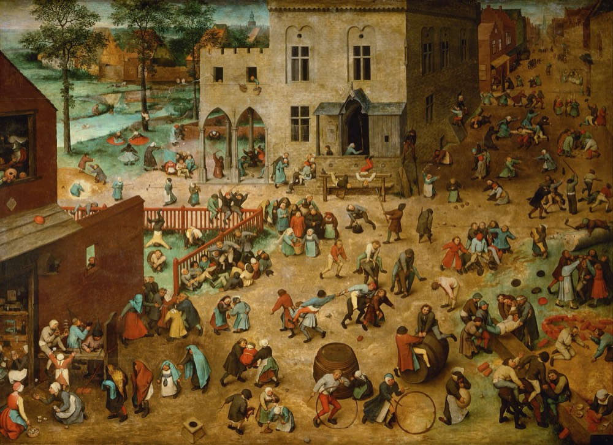

A library of everyone who was
Most people who ever lived were written down once or twice, by a clerk, and never again. This library takes them one at a time, follows each through every record that survives, and writes the life.
Pieter Bruegel the Elder, The Census at Bethlehem, 1566. At the lower left, a village queues to be written into a book.
The lives
One alcove is filled. The empty ones are people met along the way, whose lives nobody has followed yet. Any of them can be yours to write.
-

William Hayes about 1832 to after 8 March 1876 At ten he took the boots off three boys’ feet in five days. For the third pair he was sent to the other side of the world for ten years. - not yet written Mary Ann Munday Twenty-one in 1842, who pawned a stolen pair of boots under another name and got six months.
- not yet written John Tatnell, William Hampshire and Laurence Brennan junior Three boys whose boots were taken off their feet in one week of October 1842.
- not yet written George Baylis Eleven in 1841, who took a handkerchief from a pawnbroker’s door and told the court: “I hope you will have mercy upon me; I will never do such a thing again.” He was transported the next year for a box of cigars.
- not yet written Jack the sweep Named by a crying boy in 1819 and acquitted. A database joins him to George Munt, a sweep transported in 1825. Whether they are one boy is not settled.
- not yet written Caroline Molineaux About twelve in 1824, whose name is in the register of capital convictions at the Old Bailey. Twenty records are waiting.
Not yet known
Every life ends in questions. If you can open an archive the library cannot, one of these may take you an afternoon.
- William Hayes Where he was between 1843 and 1851, and whether he was at Point Puer. His conduct record in the Tasmanian archives will say.
- William Hayes Who his parents were. A baptism between 1831 and 1834, near Oxford Street or in Essex, would be the place to start.
- William Hayes What happened in Hobart in 1869. The newspapers of that September will have reported the Supreme Court.
- William Hayes Anything at all between 1852 and 1869: work, a marriage, children.